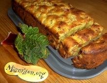

Cake à la rhubarbe
Ingrédients
×
- 200 g de rhubarbe
- 3 oeufs
- 150 g de sucre
- 1 sachet de sucre vanillé
- 100 g de farine
- 125 g de beurre doux
- 1 pincée de sel

Préparation
Étape 1
Éplucher 200 g de rhubarbe, la rincer et la couper en dés (si congelée, l’utiliser telle quelle).
Étape 2
Séparer les blancs des jaunes de 3 oeufs. Fouetter les jaunes avec 150 g de sucre et 1 sachet de sucre vanillé jusqu’à blanchiment, puis ajouter 100 g de farine et 125 g de beurre doux fondu.
Étape 3
Monter les blancs en neige avec 1 pincée de sel, les incorporer à la pâte puis ajouter la rhubarbe.
Étape 4
Cuire 40min à 180ºC.
Résumé
200 g de rhubarbe
Éplucher couper en dés
3 oeufs
150 g de sucre
1 sachet de sucre vanillé
100 g de farine
125 g de beurre doux
Séparer les blancs des jaunes Fouetter
1 pincée de sel
Monter les blancs en neige incorporer
Cuire 180ºC